How to Set Up a Teen Instagram Account
Introducing Instagram for Parents
For parents living in an era of heavily popularized social media platforms, it can feel daunting to allow your teen to have their own account. But most platforms, like Instagram, have specialized teen accounts that permit your child to explore and connect with friends, while practicing internet safety and privacy. Instagram Teen Accounts are automatically designated for anyone 14 to 17 years of age. Teen Accounts automatically become private accounts with safety features and limitations installed, such as messaging maximums and silenced notifications during night-time hours.
Setting up an Instagram Teen Account may seem like a difficult process, but this webpage will walk you through how to create your teen account and how to interlink your parental account with theirs. There are only a few total tasks you must complete. These tasks include setting up a new teen account on Instagram and having them follow your account, accepting your teens follow request and following them back, having your teen accept your request and set your account as their parental account, and then you must accept a final request to supervise their profile. Overall, setting up a Teen Account should only take ten minutes or less and can be done anywhere with stable Wi-Fi and cell service.
Some terms to be aware of:
- Family Center: The control center that links Teen accounts to Parent accounts, allowing you to set up screen limits and supervise their activity.
- Private profile: An account setting that only allows followers that you have accepted to view your profile.
- Following requests: A request that you can send an account to follow them, which they are able to either accept or deny.
- Accepting follow requests: Selecting the “confirm” button from a following request allows them to follow you and see your profile if it's a private profile.
- Follow back: After you accept an account’s follow request, you can also send a request to follow them back if you do not already follow them.
You will need the following things to complete these tasks:
- Your phone and the downloaded app
- Your personal Instagram account
- Your teens phone and the downloaded app
- Your teens email address or phone number
Setting Up a new Teen Account
To create a supervised Teen Account, you first must create a new account for your teen. You will use the mobile app to do this.
Tip: click any screenshot to enlarge it.
- To begin, open the Instagram app on your teen’s phone and select the “Create new account” button that appears on the screen. Then enter your teen’s phone number when prompted or, alternatively, enter an active email.
- You will then be prompted to create a password, such as the example shown below in figure 2.
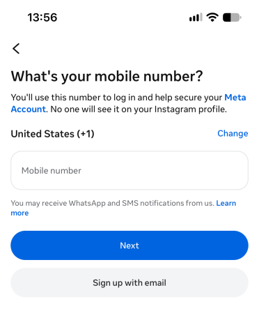
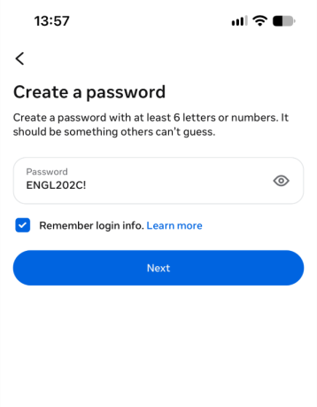
Figure 1 and 2: Entering a phone number and creating an account password for a new Instagram account. - After you link your teen’s phone number/email to their account, and set up a password, you will then be asked to select your teen’s birthday.Note: This is an important step; make sure you are honest when selecting the date. Do not lie about their age to register them as 18 or older because this step determines whether their account will automatically be designated as a Teen account.
- After you input their age, then you can input their name and continue setting up their profile.
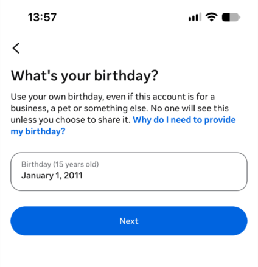
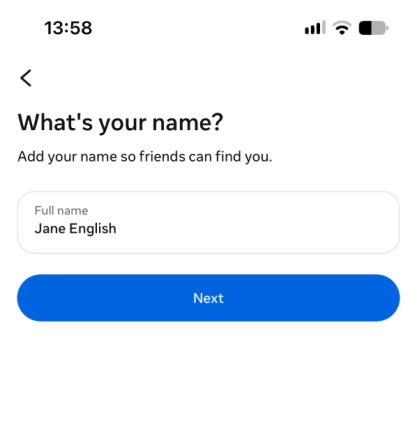
Figure 3 and 4: Entering a birthdate and your name for a new Instagram account. - Once your teen’s birthday has been selected, you can then have them create their username, which they have full creative liberty.
- Then you must agree to Instagram’s terms and policies before you can continue any further.
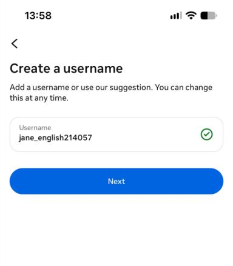
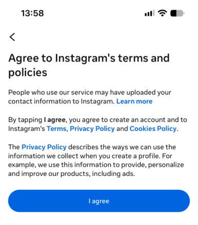
Figure 5 and 6: Entering a username and agreeing to Instagram’s terms and policies when creating a new account - Instagram will then prompt you to allow the app to access your device to send notifications, use your location, and access your contacts to connect your teen with their friends.
- Once you accept access, then your teen can then finish personalizing their account with a profile picture, Instagram Bio, and they can also add their email.
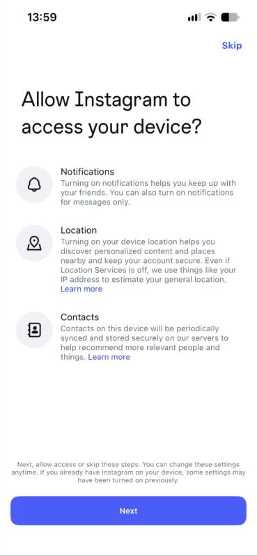
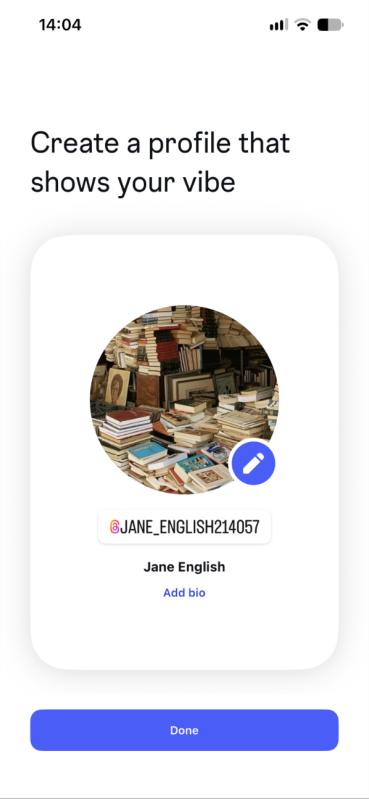
Figure 7 and 8: Allowing Instagram to access your device and personalizing your profile for a new account.
Linking the Parental and Teen Account
After the new account is created, you have completed the first half of setting up your teen’s Instagram. The second part of this process is setting up parental supervision by linking your account to the teen account.
- Search for your profile on your teens account by clicking on the magnifying glass icon at the bottom of their account to pull up the search menu. Then use your name or username to find your account and press the “follow” button.
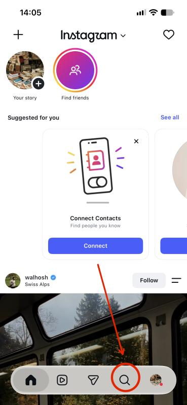
Figure 9: Select the magnifying glass icon to navigate to the search menu - Once your teen requests to follow you, then use your account and navigate to your activity page using the heart icon at the top right-hand side of the app. Select the “confirm” button next to your teen’s profile and hit the “follow back” button to request to follow their account.Note: You must hit the “follow back” button to follow their account. You won’t automatically follow them when you hit confirm.
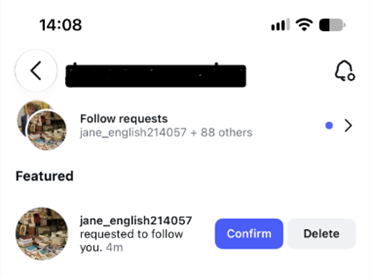
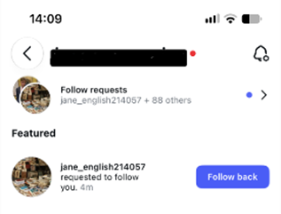
Figures 10 and 11: The teenager follows the parent's account, and the parent follows back the teenager's account. 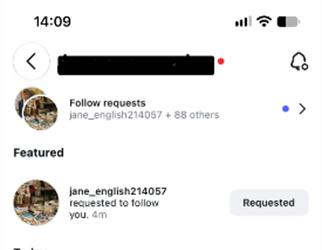
Figure 12: The parent confirms the teenager's follow request. Note: Following each other allows the teenager to easily locate the parent's account when sending a supervision request through Family Center. This enables the parent to access the teenager's account information and provide supervision. - Go to the profile page on your teen’s account and click the heart icon in the top-right corner to open the activity page. Select the “review” button on the parent profile and a page will pop up. Because this is a Teen account, it will generate a page asking, “Do you know this person?” You must confirm that you know this person before you can accept their follow request.
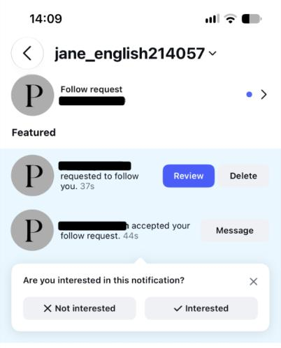
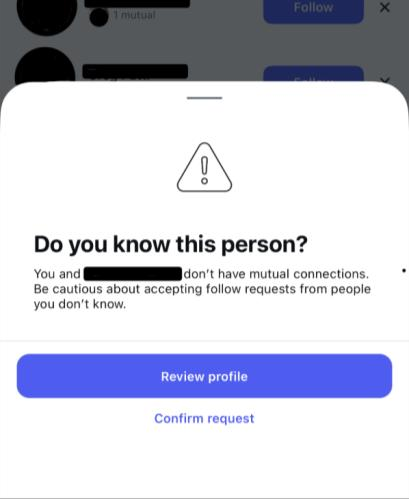
Figures 13 and 14: Reviewing an account and confirming a follow request on a Teen account. - On your teen’s main profile page, there will be a photo icon of their account on the bottom right next to the search menu icon. Select this button and then press the three lines on the top right-hand corner. Then select “Teen Account settings,” and once the settings page pops up, click the “Add” button next to the "Parent of Guardian" section.
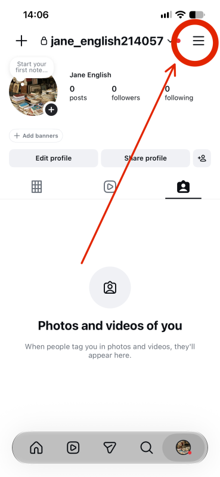
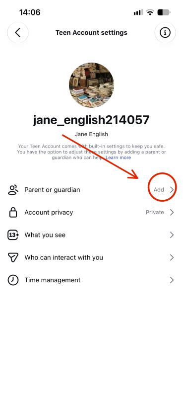
Figures 15 and 16: Selecting the - A page will prompt your teen to choose their parents' profile. You can also view this request because it will appear in your teens DM’s (messages).Note: Because you already follow your teen, your profile will automatically pop up as an option for “Parent or Guardian.”
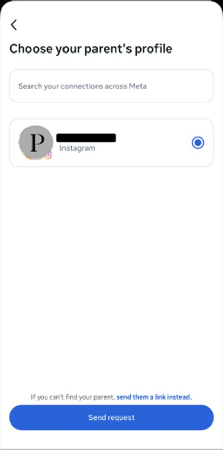
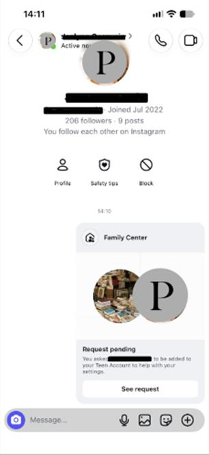
Figure 15 and 16: Choosing an account as the parental profile and viewing the request of supervision. - After the request has been sent, navigate to your accounts activity page by clicking the heart icon in the upper right-hand corner again and clicking on the “Supervision Request.”Note: After the previous step is completed, a notification will be sent to your parental account. You must accept the supervision request to link both of your accounts.
- Press “Accept” and this will make your profile the supervisor of the Teen Account.
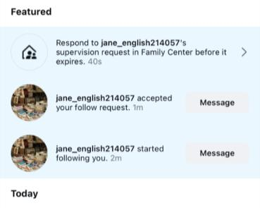
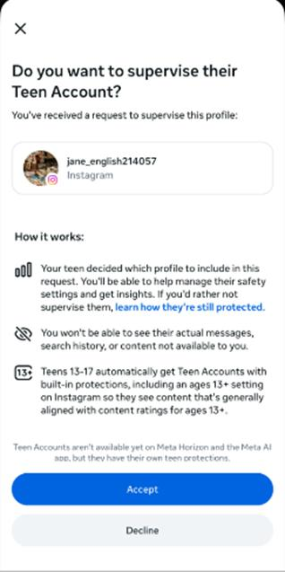
Figures 17 and 18: The supervision request sent to the parent and accepting the supervision request
Accessing the Family Center
The following steps are to demonstrate how to access different subsections in the family center.
- Reopen the Family Center on your Parent Account, by pressing the photo icon of your account on the bottom right next to the search menu icon. Then press the three lines on the top right-hand corner. This will pull up the “Setting and Activity” page.
- From this page, you can select the “Supervision for Teen Account” option, and this will take you to the Family Center where you can monitor your teens activity.
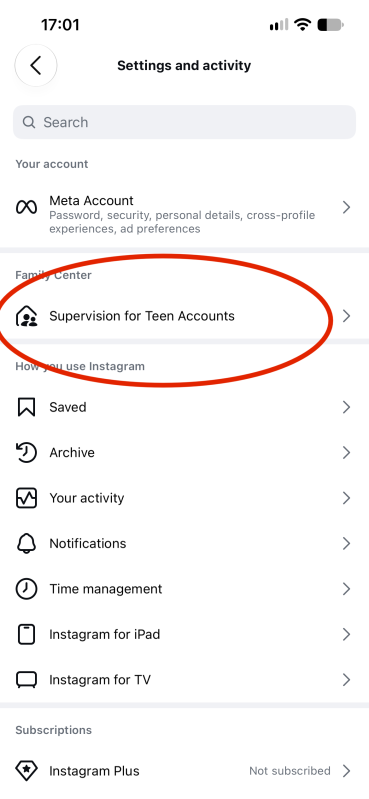
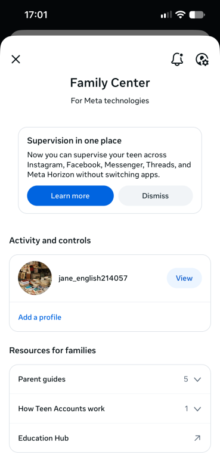
Figures 19 and 20: Accessing the Setting and Activity page and the Family Center.
For more information about Family Center, including how to manage screen time and view people who have recently contacted the teenager, return to the Family Center homepage and select "Parent Guides." This section provides additional information from Meta to help parents understand and use the available supervision features.
Family Center is a platform hosted by Meta that allows parents and guardians to have greater oversight and control over teenagers' use of Meta's social media platforms. Once a teenager has established a supervision connection with a parent or guardian through Family Center, the adult can access information about the teenager's account, such as time spent on the platform and people who have recently contacted them. The following sections explain how to access Family Center and navigate its various features.
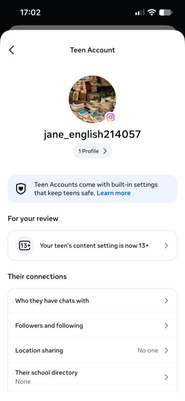
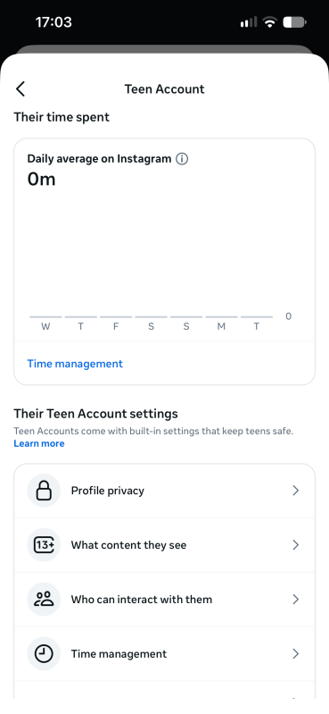
Troubleshooting
“I cannot find the Family Center”
- Ensure that you are logged into the correct account on Instagram’s mobile app. Then, in your profile menu, look for a tab that says Family Center or Supervision for Teen Accounts.
The parent cannot accept the supervision request
- Make sure the parent is logged into the correct Instagram account and see if the supervision request has already expired through the notifications tab. If so, send another request and check the notifications of the parent’s account.
The parent cannot see the teen’s account
- Verify that the parent and teen account are correctly paired together in the Family Center. If not, repeat the supervision request process once again.
Glossary
- Family Center
- The control center that links Teen accounts to Parent accounts, allowing you to set up screen limits and supervise their activity.
- Private Profile
- An account setting that only allows followers that you have accepted to view your profile.
- Following Requests
- A request that you can send an account to follow them, which they are able to either accept or deny.
- Accepting Follow Requests
- Selecting the “confirm” button from a following request allows them to follow you and see your profile if it's a private profile.
- Follow Back
- After you accept accounts follow request, you can also send a request to follow them back if you do not already follow them.
Citations
All photos were taken by a group member
Meta/Instagram